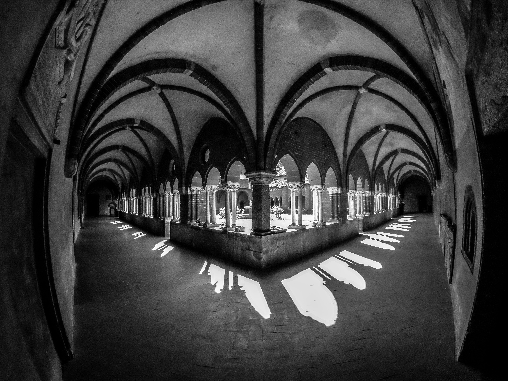
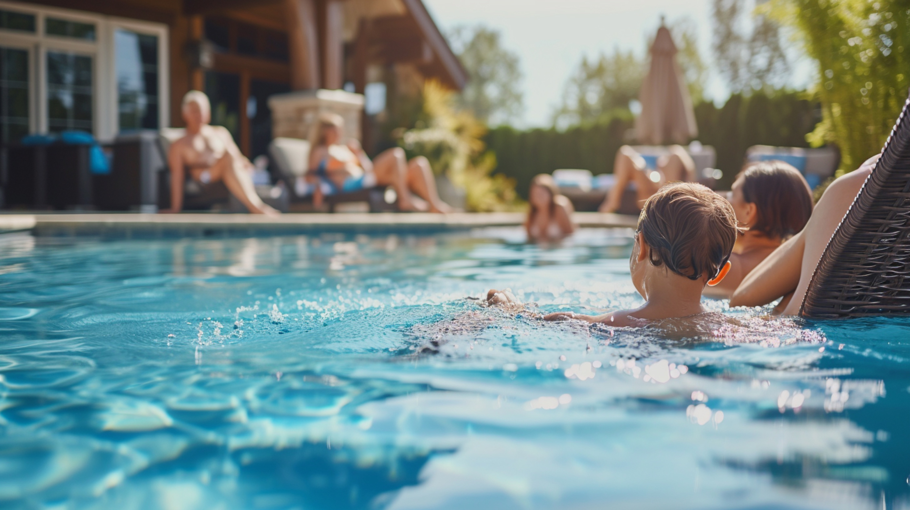
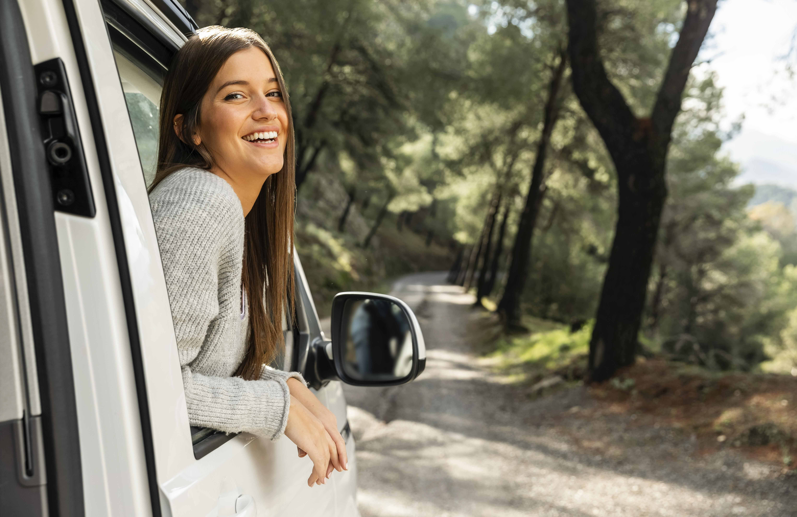
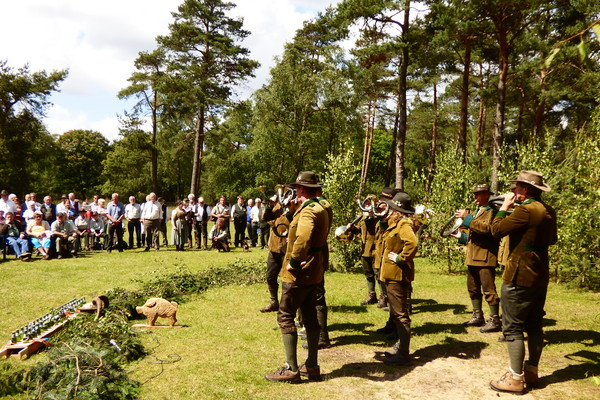

Recommendation for entertainment around Bran Castle
2-4-2024, By: VanTravelz
You cannot miss this,
The Castle of Horror, located in Bran Castle, has been one of the best experiences I have ever had in terms of an interactive experience. The atmosphere feels spooky from the moment you step in, and it only gets “worse” (truly better for my horror genre enjoyers). From Dracula popping from the ceiling to being followed on the stairs by vampires, I truly had the experience of my life.
A downside would be that my pup, Robi, a 3kg Bichon was a bit scared of the whole setting, but he was the best companion. Overall, the price of 40 Roni (7,5 euros) was definitely worth it. I highly recommend checking it out.
Vakantiepark Het Lierderholt surprised me
20-4-2024, By: OnTheRoadWithRachel
A few days ago, tiredness got to me and I decided to take a pit stop at Vakantiepark het Lierderholt.
I saw that it had good reviews on the internet, but I am always weary of them, because some businesses pay for them. The pool was just what I needed and I took my sweet time enjoying it. I also enjoyed the laundry service and the mini market.
Overall, I would stop there again.
Trusalova Camping: Beautiful
1-5-2024, By: ExpatInEurope
For the past week I have been staying at Camping Trusalova in the region of Turiec, Slovakia. I am definitely planning to stay a month longer. To say that I am obsessed is an understatement.
This region of Slovakia truly brings out the best that mother earth has to offer. The camping itself is spacious and well equipped with modern, clean bathrooms. It also has little cabins for those who would like to take some nights away from the bed of your campervan.
I will give it a nine out of ten and I highly recommend this campsite if you want to stop somewhere in Slovakia.
VANtastic at the Hoge Veluwe
7-5-2024, By: NatureCalls
One of my bucketlist items is to visit as many National parks as possible and last week I could add one to the list.
From my camp spot for the night, het Lierderholt, it was only a 20 minute drive before I arrived at the park. I had very high hopes because already on the way there, I was surrounded by beautiful nature.
I arrived just after lunch and was surprised by De Overlopers who gave a demonstration of hunting horns. It was very impressive to hear and a welcome addition to my day. I hiked around the park for a few hours and I even spotted a deer.
This was one of my favourite National parks so far and I definitely recommend it.